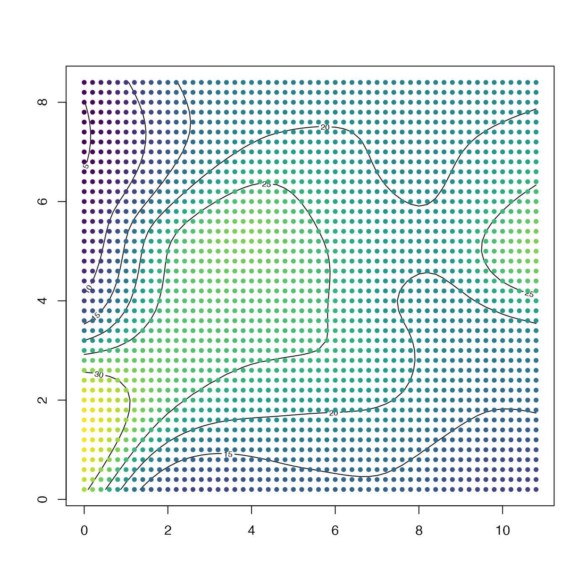

Extract the grid points from a grid, returning columns.
This is useful for e.g. gridding large datasets, in which the first step
might be to use binMean2D(), followed by
interpBarnes().
Value
A list containing three vectors: x, the grid x values,
y, the grid y values, and grid, the grid values.
Examples
library(oce)
data(wind)
u <- interpBarnes(wind$x, wind$y, wind$z)
contour(u$xg, u$yg, u$zg)
U <- ungrid(u$xg, u$yg, u$zg)
points(U$x, U$y, col = oce.colorsViridis(100)[rescale(U$grid, rlow = 1, rhigh = 100)], pch = 20)
